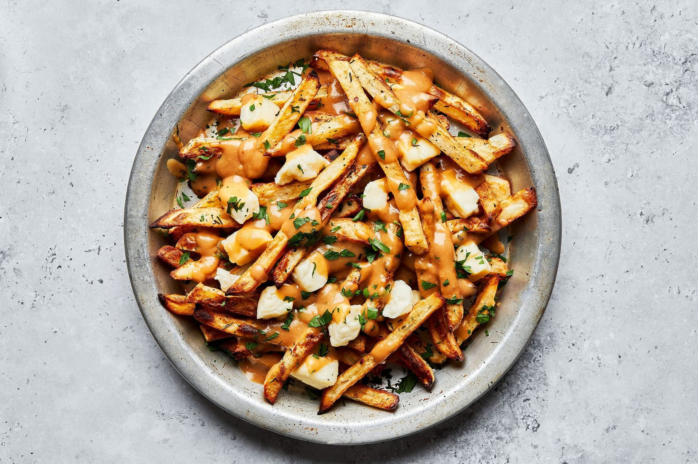

Poutine

How to Make Poutine:
Alright, pals, let's dive into the magical world of poutine!
- First things first, we're talking fries – the foundation of this Canadian delight. Now, I know what you're thinking, deep-frying can be a whole production. But fret not, we're keeping it real with baked fries. Less mess, less fuss, but all the flavor. Plus, a touch less grease means you can really soak up that gravy goodness.
- Next up, we're hitting the gravy train. Get that pot simmering with all the savory goodness you can muster. We're talking about rich, velvety gravy that'll make your taste buds do a happy dance.
- Now, it's time to bring it all together. Grab your plates or a big ol' platter if you're feeling communal. Start with a generous heap of those crispy fries – the perfect canvas for what's to come. Next, let's talk curds – those squeaky little nuggets of joy. Pile 'em on top of the fries, let 'em cozy up real nice. And finally, the pièce de résistance, the hot gravy pour. Drizzle it on, let it cascade over those curds and fries like a warm, savory waterfall.
- Now, take a moment to appreciate the masterpiece you've created. Dive in, get messy, and let the melty magic of poutine take you to flavor town. Cheers to indulgence, my friends!
Ingredients
- Butter
- Flour
- Garlic Powder
- Onion powder
- Chicken Stock
- Beef Stock
- Worcestershire sauce
- Soy Sauce
- Apple Cider Vinegar
Tools You’ll Need:
Baking
Small saucepan
Sharp knife
Vegetable peeler
<-Back to home